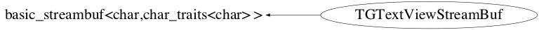

class TGTextViewStreamBuf: public basic_streambuf<char,char_traits<char> >
TGTextViewStream A TGTextViewStream is a text viewer widget. It is a specialization of TGTextView and std::ostream, and it uses a TGTextViewStreamBuf, who inherits from std::streambuf, allowing to stream text directly to the text view in a cout-like fashion
Function Members (Methods)
public:
| TGTextViewStreamBuf(TGTextView* textview) | |
| virtual | ~TGTextViewStreamBuf() |
| static TClass* | Class() |
| streamsize | basic_streambuf<char,char_traits<char> >::in_avail() |
| virtual TClass* | IsA() const |
| basic_streambuf<char,char_traits<char> >::pos_type | basic_streambuf<char,char_traits<char> >::pubseekoff(basic_streambuf<char,char_traits<char> >::off_type off, ios_base::seekdir way, ios_base::openmode which = ios_base::in|ios_base::out) |
| basic_streambuf<char,char_traits<char> >::pos_type | basic_streambuf<char,char_traits<char> >::pubseekpos(basic_streambuf<char,char_traits<char> >::pos_type sp, ios_base::openmode which = ios_base::in|ios_base::out) |
| basic_streambuf<char,char_traits<char> >::basic_streambuf<char_type,char_traits<char> >* | basic_streambuf<char,char_traits<char> >::pubsetbuf(basic_streambuf<char,char_traits<char> >::char_type* s, streamsize n) |
| int | basic_streambuf<char,char_traits<char> >::pubsync() |
| basic_streambuf<char,char_traits<char> >::int_type | basic_streambuf<char,char_traits<char> >::sbumpc() |
| basic_streambuf<char,char_traits<char> >::int_type | basic_streambuf<char,char_traits<char> >::sgetc() |
| streamsize | basic_streambuf<char,char_traits<char> >::sgetn(basic_streambuf<char,char_traits<char> >::char_type* s, streamsize n) |
| virtual void | ShowMembers(TMemberInspector&) |
| basic_streambuf<char,char_traits<char> >::int_type | basic_streambuf<char,char_traits<char> >::snextc() |
| basic_streambuf<char,char_traits<char> >::int_type | basic_streambuf<char,char_traits<char> >::sputbackc(basic_streambuf<char,char_traits<char> >::char_type c) |
| basic_streambuf<char,char_traits<char> >::int_type | basic_streambuf<char,char_traits<char> >::sputc(basic_streambuf<char,char_traits<char> >::char_type c) |
| streamsize | basic_streambuf<char,char_traits<char> >::sputn(const basic_streambuf<char,char_traits<char> >::char_type* s, streamsize n) |
| virtual void | Streamer(TBuffer&) |
| void | StreamerNVirtual(TBuffer& ClassDef_StreamerNVirtual_b) |
| basic_streambuf<char,char_traits<char> >::int_type | basic_streambuf<char,char_traits<char> >::sungetc() |
protected:
| virtual int | overflow(int = traits::eof()) |
Data Members
private:
| vector<char> | fLinebuffer | |
| TGTextView* | fTextView |
Class Charts



Function documentation
Int_t overflow(int = traits::eof())
Method called to put a character into the controlled output sequence without changing the current position.